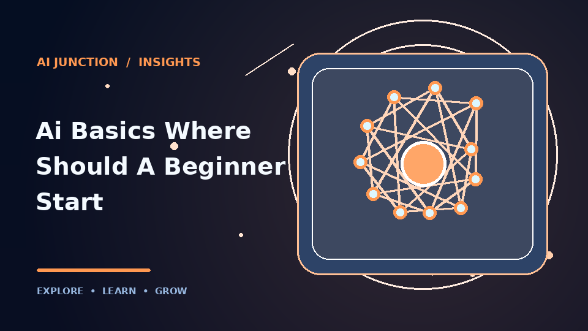
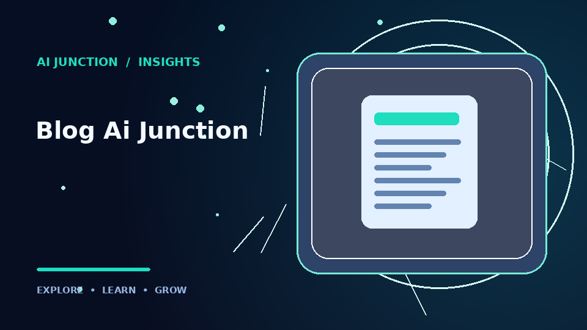
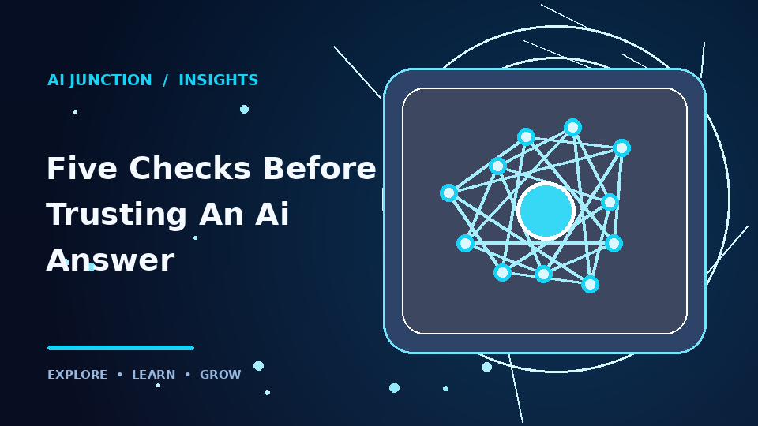
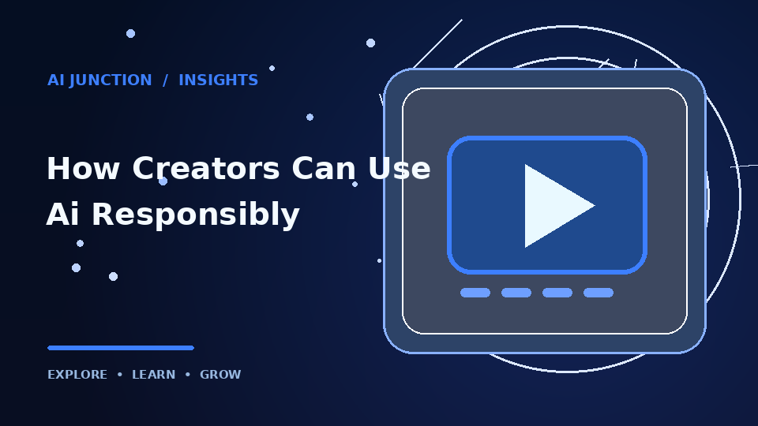
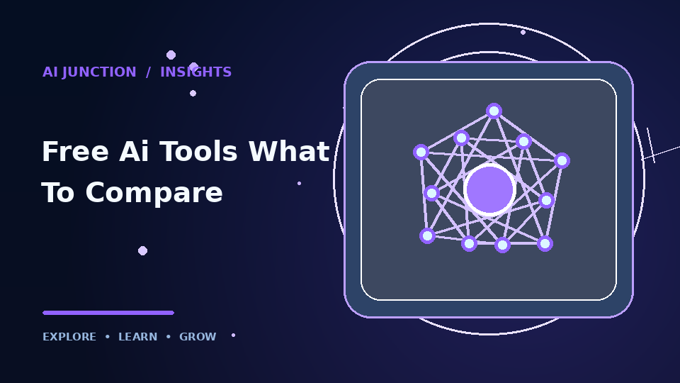
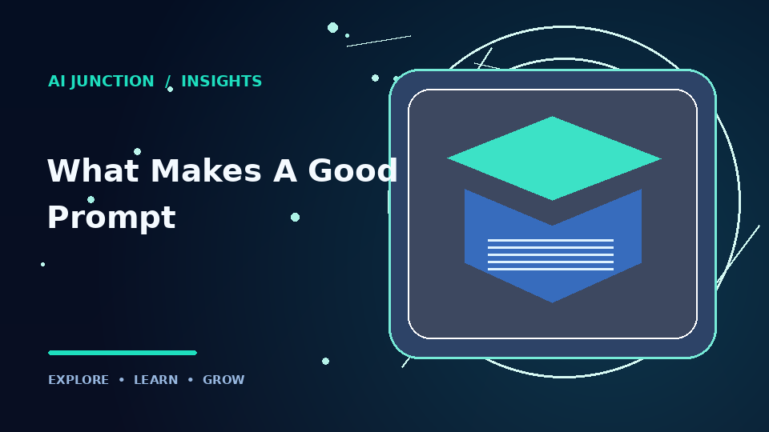

GETTING STARTED
AI basics: where should beginners start?
Begin with a specific task. Learn to ask clear questions and check the results instead of chasing every new tool.
Short, practical explainers on AI literacy, responsible use and creator workflows. These are introductory reading summaries.

Choose an article topic to explore. Full standalone articles can be added as the blog grows.

Begin with a specific task. Learn to ask clear questions and check the results instead of chasing every new tool.

Look for credible sources, date-sensitive details, missing context, unsupported claims and possible bias.

Use AI to brainstorm and draft while checking facts, licensing and originality before publishing.

Compare limits, watermarks, data use, exports and commercial terms rather than relying on the word “free”.

Include a clear goal, useful context, format and constraints. Refine based on the output.
AI can speed up work, but skills, demand, distribution and consistency matter more than earnings promises.
New long-form posts can be added here later without changing the website structure.
Explore tutorials